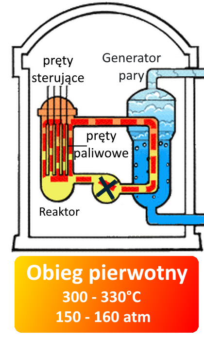
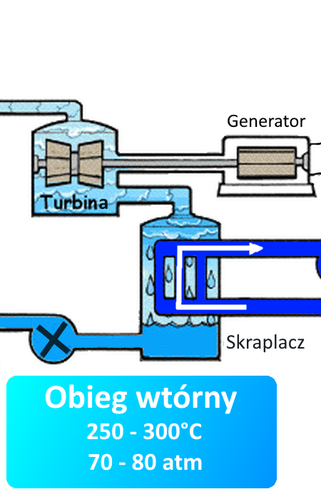
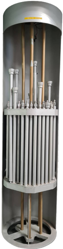

Elektrownia jądrowa jest rodzajem elektrowni cieplnej, w której energia atomowa ulega
przemianie
w energię cieplną, a następnie - mechaniczną i na końcu - elektryczną.
U.S.NRC.,
Public domain, via Wikimedia Commons, modified


Woda w obiegu pierwotnym jest ogrzewana przez reaktor jądrowy, jednak nie wrze dzięki
wysokiemu ciśnieniu. Przekazuje ciepło w generatorze pary.
Woda w obiegu wtórnym pobiera ciepło w generatorze pary, gdzie wrze i
przekształca się w parę. Ta para napędza turbiny, które są połączone z generatorem, wytwarzającym prąd
elektryczny. Para przekształca się z powrotem w stan ciekły w skraplaczu.
Obieg chłodzący odbiera ciepło od skraplacza, a następnie oddaje je
w chłodnicach kominowych. Podczas tego procesu, około 1-2% masy wody odparowywuje.

Jednym z najważniejszych elementów elektrowni jądrowej jest reaktor jądrowy, w którym zachodzi kontrolowana
reakcja rozszczepienia jąder ciężkich pierwiastków, zazwyczaj izotopu uranu 235. Reaktor jądrowy jest umieszczony
w specjalnym bloku reaktora, który wypełniony jest wodą, pełniącą funkcję chłodziwa i regulującą temperaturę
reaktora.
Wewnętrzna część reaktora zawiera pręty paliwowe, zwykle z wzbogaconym uranem 235, które są ułożone w specjalnym
układzie. Pod wpływem bombardowania neutronami, jądra uranu 235 ulegają rozszczepieniu, uwalniając energię w
postaci ciepła.
Ważne jest zaznaczyć, że woda w obiegu reaktora jądrowego nigdy nie ma bezpośredniego kontaktu z materiałem
promieniotwórczym. Reaktor jest starannie zaprojektowany i zabezpieczony, aby zapobiec wyciekom substancji
radioaktywnych i zagwarantować bezpieczne działanie elektrowni jądrowej.
Myesd, CC BY-SA 4.0, via Wikimedia Commons
Typy reaktorów
Bezpieczeństwo
>
{kind=link}
{kind=link}
{kind=link}